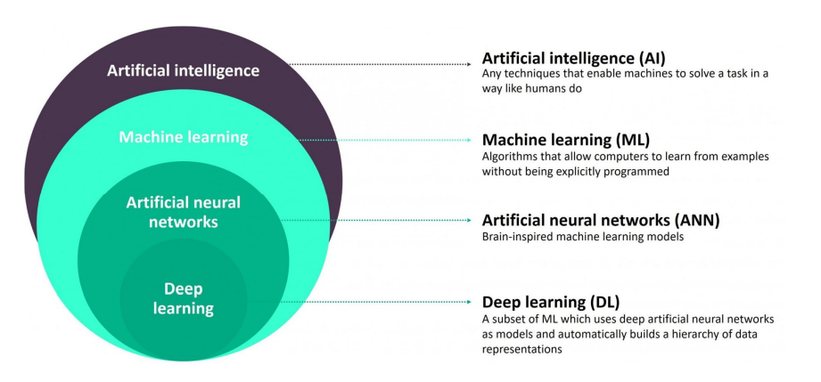
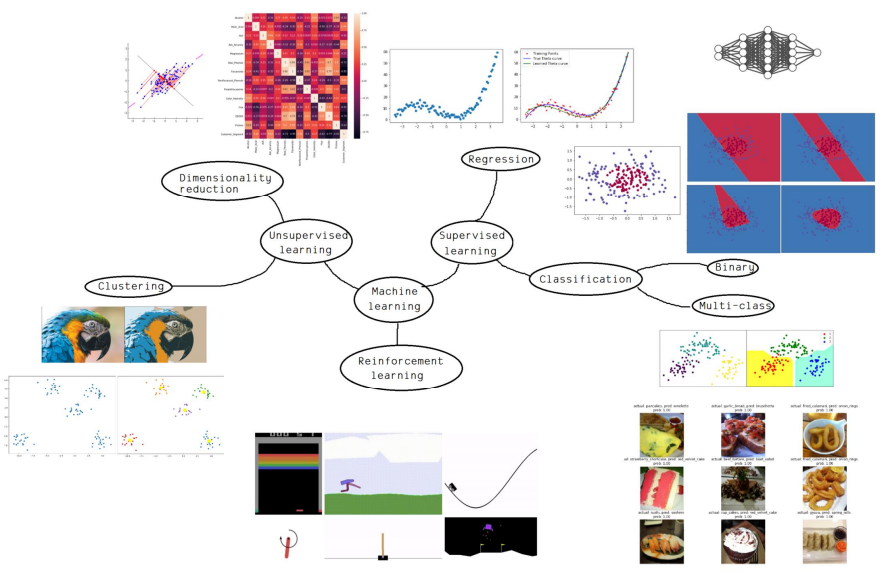
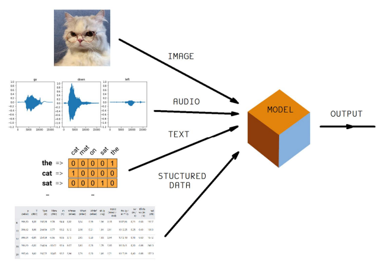

The overview of machine learning
Intro
In the time recently, Machine learning archievements now can apply into the real problems. With some coding-framework as Tensorflow, Pytorch, Keras,Caffe2,etc. Alot people can learn and build machine learning model and get job related to machine learning for living. So many concepts in machine learning field now reminded from every where. On the papers, on the media, on the websites. This will lead to the misunderstanding of them. In my humble opinion, i just want to share with you the point of view about machine learning. To get a fully understanding in any concept, theory,... you have to refer from many source, officially or out of line. That is my way to learn anything and also many people.
Big picture
Above is the big picture of artificial intelligence and the inner concepts. So you can see machine learning is only a subset inside. In machine learning, there are ANN stand for artificial neural network, DNN stand for deep neural network (also know as Deep learning). Some body think that deep learning is more difficult and some how, that is a higher-level of artificial intelligence or machine learning. That because they just see some short briefs or some papers from the internet write or talk about it and getting the misconception of them. That is not true to say deep learning is more difficult than machine learning. Deep learning is inherited from ANN and expand it into a more complex or bigger architecture. Even now, the reliable way to test or trying DNN model is experiment with dataset and GPU-intergated computer. They can validate the performance of DNN model via some calculation as learning curve, the accuracy, the error,etc.
Machine learning
There are 3 big branches of machine learning. They are identified by the way of learning.
Supervided learning
...
Unsupervided learning
Reinforcement learning
Deep learning
...
Timeline

...
Asia heroes
...
References
[1] Understanding Artificial Neural Networks
[2] Andrew Ng Google scholar
[3] Quoc Le Google scholar
[4] Machine learning - wikipedia